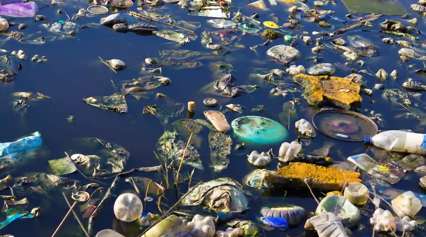
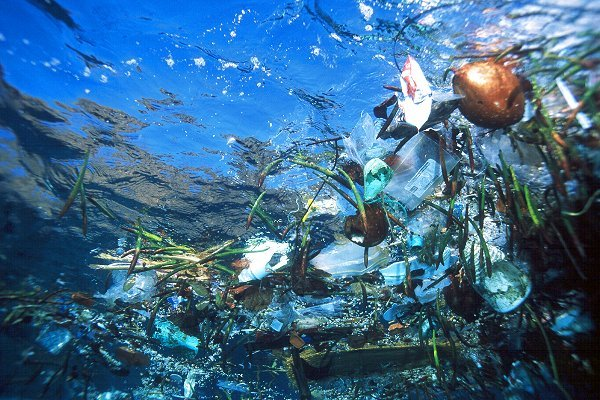

Origem
A Plataforma de coleta de lixo autossustentavél foi criada após muitos projetos realizados por nós e ela foi o projeto no qual decidimos criar o grupo e a empresa, nosso primeiro projeto focado totalmente em sustentabilidade e inovação, alias este projeto nos concedeu uma viagem para Guaiba, para participar da amostra cientifica regional, onde não conseguimos se classificar para estadual, mas ali nasceu o sonho de poder mostrar ao mundo nossos projetos.
.
vídeo retirado do nosso canal. para acessar clique no link ao lado. [clique aqui]
Motivo
Criamos este protótipo com o intuito de diminuir a poluição presente nos oceanos,mares,rios e lagos, mas que tambem fosse autossustentavel com uma energia limpa e renovavél, assim ele limparia as águas danificando o menos possivel do meio ambiente e sem poluir. Alias moramos em uma cidade chamada Tapes que é conhecida como namorada da lagoa, que geralmente está imprópria para banho e isso nos entristece muito, por isso criamos esse projeto, não só para limpar nossa lagoa, mas sim para limpar todas as águas do Brasil.
Problemas causados pela poluição
A poluição nos mares,oceanos,rios e lagos prejudica muito a saúde dos seres humanos e também dos animais, fazendo com que milhares de animais morram por ano por conta da ingestão. Veja a seguir imagens mostrando a quantidade de lixo encontrado na água em diversos lugares do mundo.

fonte da imagem: acontecendo aqui. [clique aqui]

fonte da imagem: pensando verde. [clique aqui]

fonte da imagem: InfoEscola. [clique aqui]
Soluções
com o protótipo sendo totalmete autossustentavel com energia limpa e renovavél seria otimo para retirar o lixo das águas prejudicando e poluindo o menos possivel. O plástico retirado seria utilizado para reaproveitamento e reciclagem, podendo ser usado na criação de objetos, móveis e até tijolos ecológicos, isso seria essencial para geração de empregos e no auxilio a moradores de cidades ribeirinhas, que conseguiriam emprego nos centro de triagem(onde ocorre a reciclagem do plástico) e também pilotando a plataforma.